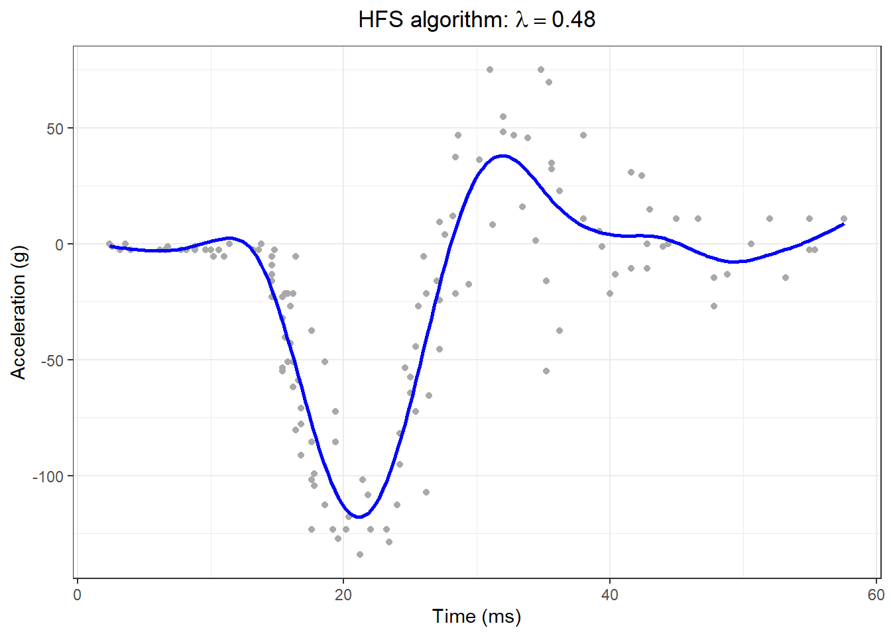

Chapter 1 P-Spline
1.1 mixed model
# P-spline fit using mixed model and fast Harville algorithm
# A graph in the book 'Practical Smoothing. The Joys of P-splines'
# Paul Eilers and Brian Marx, 2019
# Get the data
data(mcycle)
x = mcycle$times
y = mcycle$accel
m = length(y)
mmin = min(x)
mmax = max(x)
# Set P-spline parameters
nseg = 20
pord = 2
bdeg = 3
# Compute basis matrix and inner products
B = bbase(x, bdeg = bdeg, nseg = nseg)
n = ncol(B)
D = diff(diag(n), diff = 2)
P = t(D) %*% D
BtB = t(B) %*% B
Bty = t(B) %*% y
lambda = 1
for (it in 1:10) {
G = BtB + lambda * P
a = solve(G, Bty)
mu = B %*% a
r = y - mu
H = solve(G, BtB)
ed = sum(diag(H))
sig2 = sum(r ^ 2) / (m - ed)
tau2 = sum((D %*% a) ^ 2) / ed
lanew = sig2 / tau2
dla = (lanew - lambda) / lambda
lambda = lanew
cat(it, ed, dla, "\n")
}## 1 10.52137 -0.4784859
## 2 11.79696 -0.08083044
## 3 11.96895 -0.00640244
## 4 11.98211 -0.0004611875
## 5 11.98306 -3.298502e-05
## 6 11.98312 -2.357948e-06
## 7 11.98313 -1.685527e-07
## 8 11.98313 -1.204859e-08
## 9 11.98313 -8.612642e-10
## 10 11.98313 -6.156593e-11xg = seq(min(x), max(x), length = 200)
Bg = bbase(xg, bdeg = 3, nseg = nseg)
yg = Bg %*% a
titl = bquote("HFS algorithm:" ~ lambda == .(round(lambda, 2)))
# Make the plot
F1 = data.frame(x,y)
F2 = data.frame(xg1 = xg, yg1 = yg)
ggplot(F1, aes(x = x, y = y)) +
geom_point(data = F1, size = 1.5, color = "darkgray") +
geom_line(aes(x = xg1, y = yg1), data = F2, size = 1, colour = I("blue"), lty = 1) +
xlab("Time (ms)") + ylab("Acceleration (g)") +
ggtitle(titl) +
JOPS_theme()